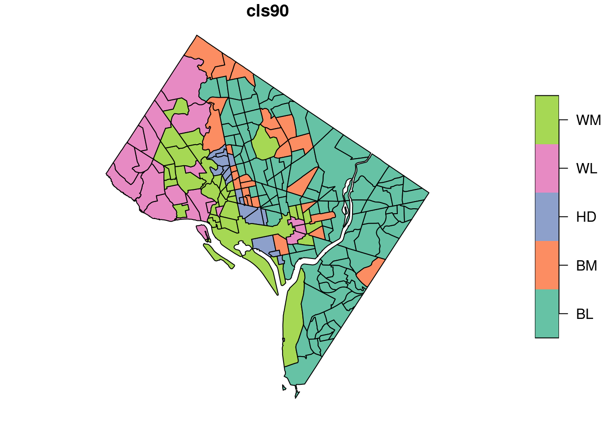
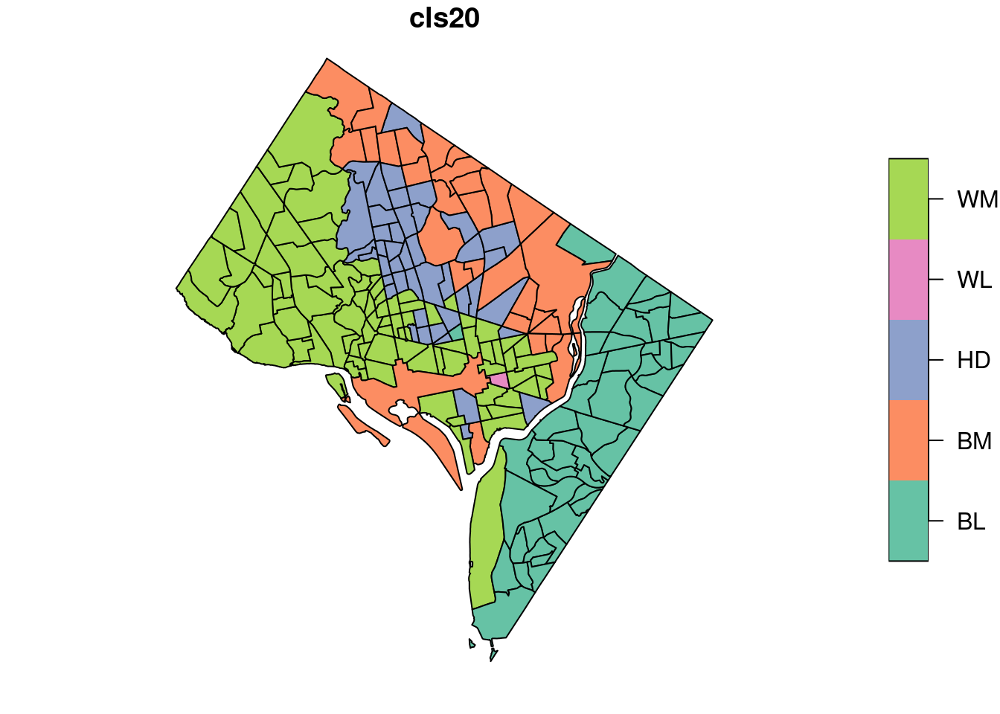

13Analiza zmian typów struktury rasowo-etnicznej ludności
13.1 Klasyfikacja rasowo-etnicznej struktury ludności
Jedną z form prezentacji rasowo-etnicznej struktury ludności jest sklasyfikowanie jednostek agregacji, tak aby reprezentowały różne typy struktury rasowo-etnicznej ludności. Klasyfikacja stosowana jest np. dla każdego obszaru spisowego w mieście. Wyniki mogą być przedstawione w postaci tabeli pokazującej procentowy udział jednostek sklasyfikowanych jako dany typ lub mapy.
Przykładem zastosowania klasyfikacji jest projekt Mixed Metro (https://mixedmetro.com/) dostarczający mapy typów zróżnicowania rasowo-etnicznego dla lat 1990-2020 dla obszaru Stanów Zjednoczonych.
W nieniejszym przykładzie obszary spisowe zostaną sklasyfikowane do 13 typów wyróżnionych na podstawie procentowego udziału grup rasowo-etnicznych.
Kryteria klasyfikacji
Typ mało zróżnicowany:
Kryterium: grupa dominująca stanowi >80% ogólnej liczby ludności.
zdominowany przez białych (WL)
zdominowany przez czarnych (BL)
zdominowany przez Azjatów (AL)
zdominowany przez Latynosów (HL)
Typ średnio zróżnicowany (grupa dominująca stanowi 50%-80%):
Kryterium: grupa dominująca stanowi <50%-80%> ogólnej liczby ludności.
zdominowany przez białych (WM)
zdominowany przez czarnych (BM)
zdominowany przez Azjatów (AM)
zdominowany przez Latynosów (HM)
Typ o dużym zróżnicowaniu (HD)
Kryterium: żadna z grup nie przekracza 50%.
13.2 Przykład: Typy rasowo-etnicznej struktury ludności
W poniższym przykładzie wykorzystano dane na poziomie obszarów spisowych dla 1990 i 2020 roku dla obszaru District of Columbia. Obszary spisowe zostały sklasyfikowane do 13 typów rasowo-etnicznej struktury ludności. Następnie przeanalizowano liczbę obszarów spisowych wg typów w danym roku oraz wykonano macierz przejść pokazująca zmiany między dwoma latami.
13.2.1 Dane
library(sf)
Linking to GEOS 3.10.2, GDAL 3.4.1, PROJ 8.2.1; sf_use_s2() is TRUE
13.2.2 Obliczenie liczby obszarów spisowych według typu struktury rasowo-etnicznej ludności.
Liczba obszarów spisowych w 1990 roku według typów.
table(cls_df$cls90)
BL BM HD WL WM
109 26 16 21 34
Funkcja prob.table() pozwala na obliczenie odsetka obszarów według danego typu, jeśli wynik wymnożymy przez 100 otrzymamy procenty. Funkcja round() zaokrągli wynik do określonej liczby miejsc po przecinku
Wyniki w dwóch powyższych tabelach pokazują, że w roku 1990 75 obszarów (co stanowi 38.5%) zostało sklasyfikowanych jako typ o dużym zróżnicowaniu (żadna grupa nie stanowiła powyżej 50%), a 69 obszarów (35.4%) jako obszary średnio zróżnicowane zdominowane przez białych.
Liczba obszarów spisowych w 2020 roku według typów.
Do określenia zmian typów między latami wykorzystuje się macierz przejść (ang. transition matrix). Macierz przejść pokazuje ile jednostek zmieniło typ między jednym a drugim rokiem. Wartości na przekątnej pokazują ile jednostek nie zmieniło typu między jednym a drugim rokiem.
W powyższej tabeli wiersz zawiera dane dla roku 1990, a kolumny dla roku 2020. Np. wartość 12 (ostatni rząd oraz 4 kolumna) oznacza, że 12 obszarów spisowych sklasyfikowanych w roku 1990 jako WM (mało zróżnicowane zdominowane przez białych) w roku 2020 zmieniło swój typ na HD (duże zróżnicowanie, żadna grupa nie stanowi więcej niż 50%).
Jeśli zsumujemy wartości w wierszach (rowSums) to otrzymamy liczbę obszarów spisowych według typów w 1990 roku (to samo otrzymamaliśmy wykonując polecenie table(cls_df$cls90))
rowSums(tab)
BL BM HD WL WM
109 26 16 21 34
Jeśli zsumujemy wartości w wierszach (colSums) to otrzymamy liczbę obszarów spisowych według typów w 2020 roku (to samo otrzymamaliśmy wykonując polecenie table(cls_df$cls10))
colSums(tab)
BL BM HD WL WM
48 29 43 1 85
Poniższa tabela przedstawia odsetek obszarów spisowych (np. 16.4% w 1990 zostało sklasyfikowanych jako HD, a w 2020 jako AM; 23.6% obszarów spisowych w roku 1990 oraz 20120 było sklasyfikowanych jako WM).
Dwie pierwsze ryciny pokazują przestrzenne rozmieszczenie typów struktury rasowo-etnicznej z zastosowaniem domyślnych kolorów (ten sam typ ma różny kolor w roku 1990 oraz w roku 2020). Mapy te nie nadają się do porównania między latami. Aby mapy były porównywalne muszą być wyświetlane w tych samych kolorach (dany typ musi mieć ten sam kolor na obu mapach)
plot(cls_df["cls90"])

plot(cls_df["cls20"])

13.3.1 Ujednolicenie kolorów
Pakiet colorpicker dostarcza narzędzie do wyboru kolorów (https://cran.r-project.org/web/packages/colourpicker/vignettes/colourpicker.html) Po zainstalowaniu pakietu należy wybrać Addins - Colour Picker.
Wektor cls_color zawiera kolory przypisane poszczególnym typom struktury rasowo-etnicznej (Uwaga! Typy muszą być wymienione alfabetycznie).